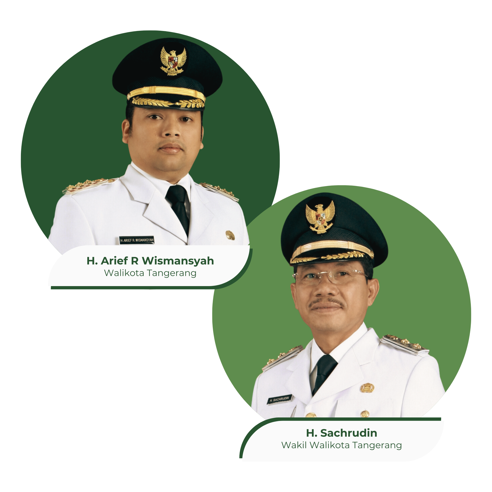

Kota Tangerang berada di bagian timur Provinsi Banten dan merupakan
Kota Terbesar di Provinsi Banten, sekaligus ketiga terbesar di
Jabodetabek. Kota Tangerang (Sunda: aksara Sunda: ᮒᮍᮨᮛᮀ) adalah kota
yang terletak di provinsi Banten, Indonesia. Kota ini terletak tepat
di sebelah barat DKI Jakarta. Suku aslinya adalah Suku Sunda. Pada
tahun 2021, jumlah penduduk kota Tangerang sebanyak 1.853.462 dengan
kepadatan 12.041 jiwa/km2.

Berita Kota Tangerang
Puskesmas Panunggangan Raih Penghargaan Standarisasi Pelayanan Ramah
Anak Tingkat Provinsi Banten
Jumat, 22 Desember 2023 | 22:56 WIB
Terus berinovasi untuk memberikan pelayanan kesehatan yang
paripurna, khususnya untuk mereka anak-anak Kota Tangerang.
Pemerintah Kota (Pemkot) Tangerang melalui Dinas Kesehatan (Dinkes),
yakni Puskesmas Panunggangan, Kecamatan Pinang baru saja meraih
Penghargaan Standarisasi Pelayanan Ramah Anak di Puskesmas (RPAP)
tingkat Provinsi Banten.
Kilas Balik Satu Dekade, Kampung Si Gacor Sukses Atasi Pandemi
COVID-19 di Kota Tangerang
Jumat, 22 Desember 2023 | 19:10 WIB
Satu dekade berjalan, Pemerintah Kota (Pemkot) Tangerang di bawah
kepemimpinan Wali Kota Tangerang, Arief R. Wismansyah, dan Wakil
Wali Kota Tangerang, Sachrudin, mencatatkan banyak keberhasilan di
bidang pelayanan publik. Salah satunya, Pemkot Tangerang berhasil
mengatasi pandemi COVID-19 melalui terobosan kebijakan yang
inovatif, yakni Kampung Tangguh Jaya Siaga Corona (Si Gacor).